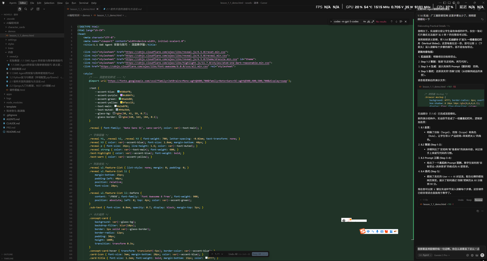
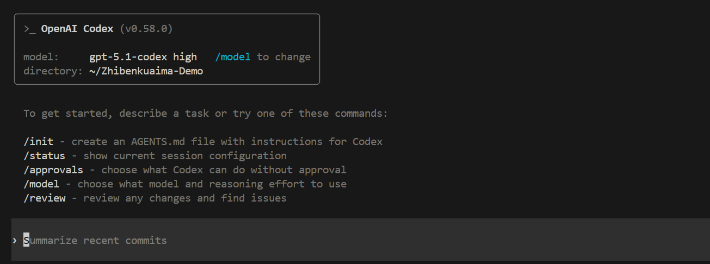
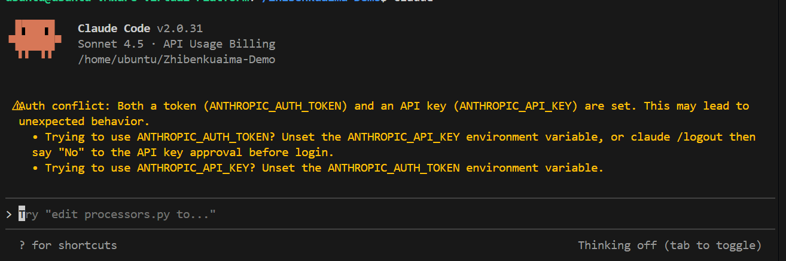

Lesson 1.1
SWE Agent 安装与使用技巧
把 Codex / Claude Code 当成“虚拟实习生”，完成从安装到接单的首条闭环。
🎯 本节目标
- 理解 AI 编程 VS 传统写法的差异。
- 会在 Windows 上安装 Codex（GPT-5.1-codex）。
- 能配置 config.toml / auth.json 并跑通 CLI。
- 掌握最小工作流：提问 → 生成 → 改进 → 交付。
🧠 记忆锚点
- AI 编程 = 用自然语言驱动代码。
- Codex 像命令行里的“贴身助理”。
- 参数三件套：模型、沙箱、审批。
📚 情境代入
想象你是接单工作室的“版本管家”，需要随叫随到地配置 Agent、解读指令，并协助完成静态站点。
AI 编程 = 把重复劳动交给 Agent
定义
AI 编程 = 想法 → 自然语言描述 → Agent 拆解 / 产出代码 → 人类审核。不把脑子交出去，而是把琐事交给 AI。
传统流程
查资料 → 写代码 → 改 Bug，全靠自己。
AI 协作
描述需求 → AI 给方案 / 代码 / 复盘，你负责决策。
课堂提醒
每次提问要交代「目标 + 现状 + 约束」，否则 Agent 无法高质量落地。
可以这样记：人脑做判断，Agent 做执行。
Cursor：IDE 里的 AI 编辑器
- 选中代码直接聊天，适合边写边问。
- 可针对整个项目问“怎么改”。
- 非常适合初次体验 AI 编程。
👉 课堂提示：把 Cursor 当作“有 AI 的 VS Code”。
SWE Agent（Codex / Claude Code）
Codex = GPT‑5.1-codex
命令行驻场，负责执行指令、跑脚本、编辑文件。
Claude Code = Sonnet 4.5
擅长发散思维、复杂排查，费用更高。
组合拳：轻量任务用 Codex，复杂架构找 Claude。
如何选择：Codex vs Claude Code
Codex (GPT‑5.1-codex)
- 价格友好，课堂主要示范。
- 拆解步骤、执行指令非常稳。
- 适合日常 Coding / Debug / 补文档。
Claude Code (Sonnet 4.5)
- 发散思维、方案比较更强。
- 调研 / 架构讨论 / 高难定位更适合。
- 价格约为 GPT‑5 的 5 倍。
Windows 安装三步走
1. 安装 Node.js
Node = 运行 Codex CLI 的引擎。确保 node -v 和 npm -v 有输出。
2. 安装 Codex
npm install -g @openai/codex，然后执行 codex --version。
3. 配置凭证
在 ~/.codex/config.toml 与 auth.json 写入 API Key / Base URL，确保 CLI 能登陆。
遇到报错：先看 Node 版本，再查网络代理与权限。
常用启动命令
codex -m gpt-5.1-codex --reasoning-effort high --ask-for-approval on-request --sandbox workspace-write
-m：指定模型。--reasoning-effort：思考强度（low / medium / high）。--ask-for-approval：审批机制（never / on-request / always）。--sandbox：磁盘权限。
配置文件速览
model_provider = "fox" model = "gpt-5.1-codex" model_reasoning_effort = "high" disable_response_storage = true [model_providers.fox] name = "fox" base_url = "https://code.newcli.com/codex/v1" wire_api = "responses" requires_openai_auth = true
Auth Key 放在 ~/.codex/auth.json，不要提交到 Git。
练习：命令参数判断题
请选择最合适的参数搭配，完成 Codex 的安全启动。
MCP：给 Agent 插“外设”
Step 1 · 找到 MCP Server
如 Contect7、local fs、数据库查询等。
Step 2 · 运行安装脚本
在 Agent 对话中粘贴官方指令，授予权限。
Step 3 · /mcp list-tools
确认指令可用，写入 CLAUDE.md / SWE_AGENTS.md 方便复用。
课堂演示：Contect7
提示词模板
“请根据官方文档一步步帮我安装 Contect7 MCP 服务器，并在成功后列出可调用的工具列表。”
📝 操作任务
- 向 Codex 贴出指令，请它执行。
- 遇到失败，查看日志并重试。
- 整理成功步骤，写入你的课程笔记。
实战实验室：星光摄影工作室 Hero 区
修改右侧实验室的文案或配色，立即预览。练习如何把“自然语言需求”映射到 HTML + CSS。
现实价值与课堂作业
🌏 现实价值
- 使用 Codex 可在 1 小时内交付静态官网 Demo。
- 日常接单：单页宣传站 500~1500 元，复杂多端 2000+。
- 记录配置与脚本方便复用，形成个人工作流资产。
📝 作业 Checklist
- 完成 Node + Codex 安装截图。
- 提交 config.toml / auth.json 模板（敏感信息打码）。
- 与 Codex 协作完成一个 3 区块页面，并上传仓库。
下节课我们会用相同的 Agent 去复习 Python 与环境管理。